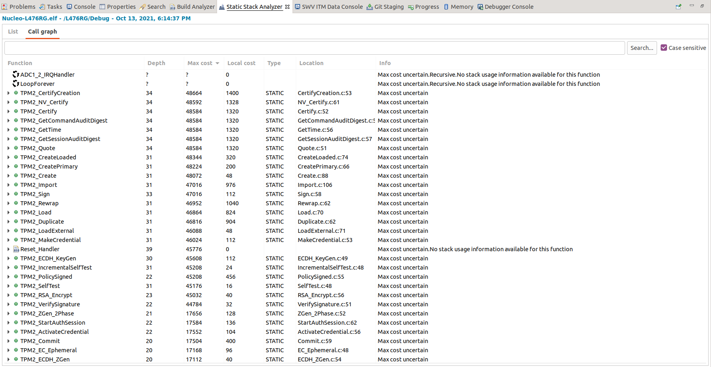

Current issues
Current issues
Investigate possible security issues
As Jeremy Boone mention @ slack trusted-computing channel, we should investigate possible flaws in NVMem implementation.
the _plat__ APIs in NVMem.c are where i’ve seen the most mistakes. If you are persisting data to external flash then you need confidentiality, integrity, rollback-protection, and replay-protection.
Incoming data reception and decoding
Data sent from VCOM application always get received as full command located in one incoming buffer. Parsing commands make use of this feature, letting the application execute only commands, that are received at once.
static int8_t CDC_Receive_FS(uint8_t* Buf, uint32_t *Len)
{
/* USER CODE BEGIN 6 */
if(!TpmSignalEvent(Buf, Len))
{
return(USBD_FAIL);
}
...
}
Protocol analysis - early conclusions
Getting STM32 to communicate with VCOM application leads us to a current yet not resolved problem.
Right now we are able to execute commands on TPM, but an error occurs when the host device verifies the response data. Specifically, this line of code causes an error:
*((unsigned int*)&response[sizeof(unsigned short) + sizeof(unsigned int)]) == 0
For now, it's not clear what the response data of TPM_Startup command should look like and what each byte of command represents.
Command and response data looks as follows.
unsigned char CmdBuf[12] = {
0x80, 0x01, 0x00, 0x00, 0x00, 0x0c, 0x00, 0x00, 0x01, 0x44, 0x00, 0x00
};
unsigned char RspBuf[12] = {
0x80, 0x01, 0x00, 0x00, 0x00, 0x0a, 0x00, 0x00, 0x00, 0x00
};
This data is output via ITM trace on port 2.
Correctness of data was verified on both sides of the communication.
Startup command data is hardcoded in VCOM application here what makes it hard to reason about its origins.
Raw data dumped from CDC_Receive_FS shows some similarities between VCOM
sent command and test run of tpm2_startup -T device:/dev/ttyACM1 application.
VCOM Startup command received
0x54 0x70 0x6d 0x32 0x3 0x0 0x0 0x0 0x4 0x0 0x0 0x0 0xac 0x44 0x69 0x61
0x54 0x70 0x6d 0x32 0x6 0x0 0x0 0x0 0x14 0x0 0x0 0x0 0x0 0x0 0x0 0x0 0xc 0x0 0x0 0x0 0x80 0x1 0x0 0x0 0x0 0xc 0x0 0x0 0x1 0x44 0x0 0x0
tpm2_startup received command
0x80 0x1 0x0 0x0 0x0 0xc 0x0 0x0 0x1 0x44 0x0 0x1
As you can see VCOM sends much more bytes. Presumably two commands (?) as new
the line gets appended to the log after a new pack of data gets received by
CDC_Receive_FS function.
static int8_t CDC_Receive_FS(uint8_t* Buf, uint32_t *Len)
{
for(int i=0; i<*Len; i++) {
itmPrintAppend(ITMSTDERR, "0x%x ", Buf[i]);
}
itmPrintAppend(ITMSTDERR, "\n");
...
}
What's interesting is the last 12 bytes of the received buffer, which differs only in the last byte between VCOM and tpm2_startup.
Software simulator tpm-js shows exactly the same command and response data, as ITM debug output when using VCOM application.
tpm-js output:
PowerOn
ManufactureReset
Startup
About to execute command TPM2_CC_Startup
Command buffer (12):
0000 80 01 00 00 00 0c 00 00 01 44 00 00 .........D..
Response buffer (10):
0000 80 01 00 00 00 0a 00 00 00 00 ..........
ITM port 2 output:
//2021.10.14-08:52:37.000GMT
unsigned char CmdBuf[12] = {
0x80, 0x01, 0x00, 0x00, 0x00, 0x0c, 0x00, 0x00, 0x01, 0x44, 0x00, 0x00
};
//2021.10.14-08:52:37.330GMT
unsigned char RspBuf[12] = {
0x80, 0x01, 0x00, 0x00, 0x00, 0x0a, 0x00, 0x00, 0x00, 0x00
};
From what I discovered, the first 4 bytes of VCOM communication are the
magic signal values from TpmDevice.h
0x54 0x70 0x6d 0x32
#define SIGNALMAGIC (0x326d7054) //Tpm2
For now, the rest of the protocol is to be discovered. Probably we should
focus on getting tpm2_tools to work with STM32, as we probably don't want to
port VCOM to Linux.
This requires a better understanding of the communication protocol itself thus the following document will be helpful:
TCG TSS 2.0 TPM Command Transmission Interface (TCTI) API Specification
Section 1.3 Refedences
TCG PC Client Platform TPM Profile (PTP) Specification
Chapter 6
TCG TSS 2.0 TPM Command Transmission Interface (TCTI) API Specification
20.10.2021 update:
The incoming data sent from VCOM application decodes as follows:
54 70 6d 32 6 0 0 0 14 0 0 0 0 0 0 0 c 0 0 0 80 1 0 0 0 c 0 0 1 44 0 0
sizeof(signalWrapper_t)
{
sig->s.magic '\x54\x70\x6d\x32' uint32_t hardcoded magic value
sig->s.signal '\x06\x00\x00\x00' uint32_t signal enum
sig->s.dataSize '\x14\x00\x00\x00' uint32_t data size
}
sizeof(unsigned int) * 2)
{
'\x00\x00\x00\x00' uint32_t locality
'\x0c\x00\x00\x00' uint32_t cmdSize
}
actual TPM command Global.h:1098
'\x80\x01' TPM_ST command.tag;
'\x00\x00'\x00\x0c' UINT32 commandSize;
'\x00\x00\x01\x44' TPM_CC command.code
'\x00\x00'
Probably all of those header values are redundant and should be decoded using unmarshal mechanism.
Memory usage
Memory limitations hit us right at the beginning preventing us from building the project for STM32L476RG on both Linux STM32CubeIDE and Windows Atollic Studio.
After limiting the minimal stack size in the linker script the application fits in SRAM memory, but probably the problem will hit us soon after successful execution of TPM command.

At the moment of writing, we are almost out of memory.

Outdated repository
After struggling a lot with build errors while compiling the master branch we
decided to roll back the repo. Chosen commit is the one, that adds STM32
samples. Plans involve updating the repo, eventually hitting most actual
changes.
Differences between STM32 and Simulator implementation of command parsing
Dealing with the actual communication with TPM core we are facing some minor problems.
VCOM application dedicated to TPM communication, located in
ms-tpm-20-ref/Samples/Nucleo-TPM/VCOM is created using Windows, so we have to
decide if we want to port it.
Data packet for controlling the TPM differs between one used by tpm2_tools,
Simulator, and STM32 implementation.
This point needs additional investigation, but a quick glance at received data
sent by using tpm2_startup -T device -d/dev/ttyACM1 --state command ensures us
about it. By /dev/ACM1 port we mean STM32 USB CDC.
Possible bug in build system
According to the project assumptions, whole configuration is done using
user_settings.h file. Previously encountered
error
led us to the conclusion that some parts of the aplication could be
misconfigured.
Some of the build switches inside TpmBuildSwitches.h could be enabled in an
unwanted way.
It needs to be further investigated with defines like SIMULATION and
SELF_TESTS in mind. Maybe we can get some extra free RAM space this way.